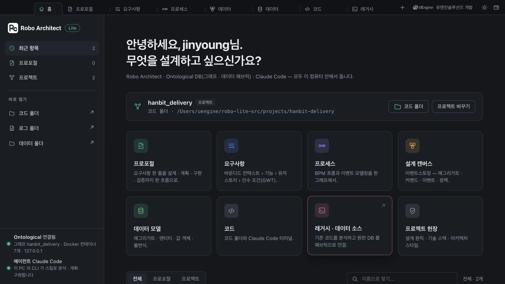
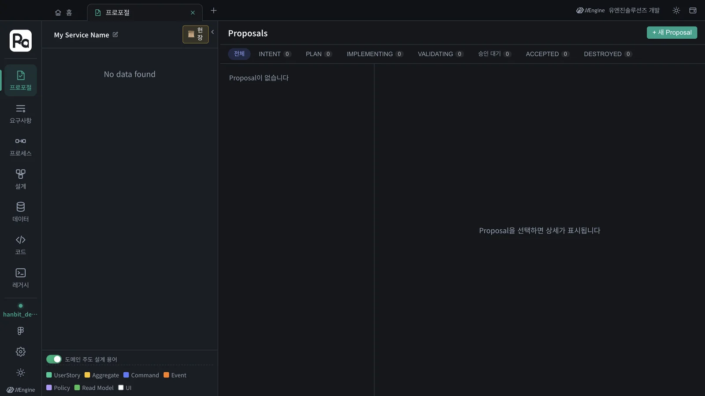
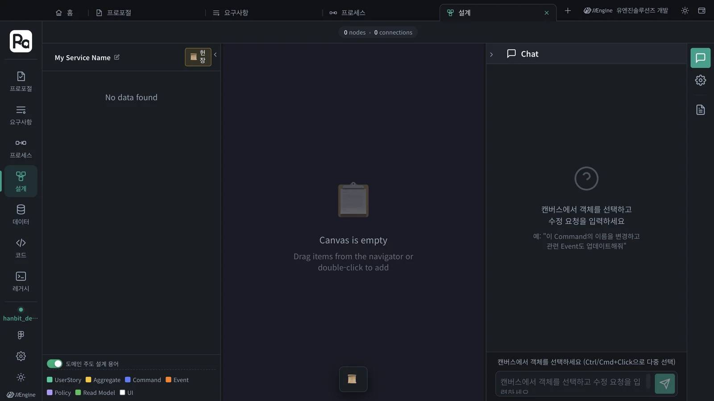
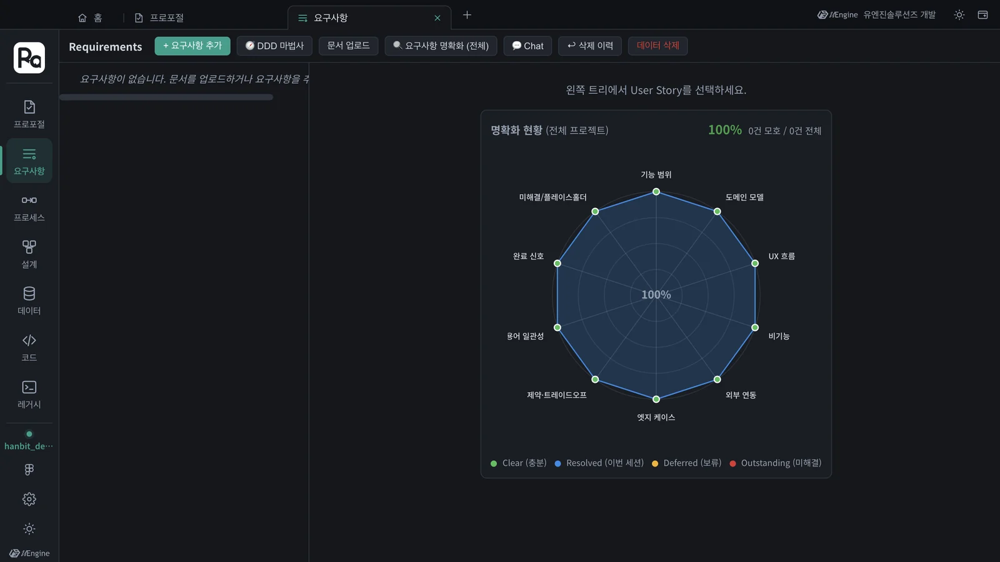
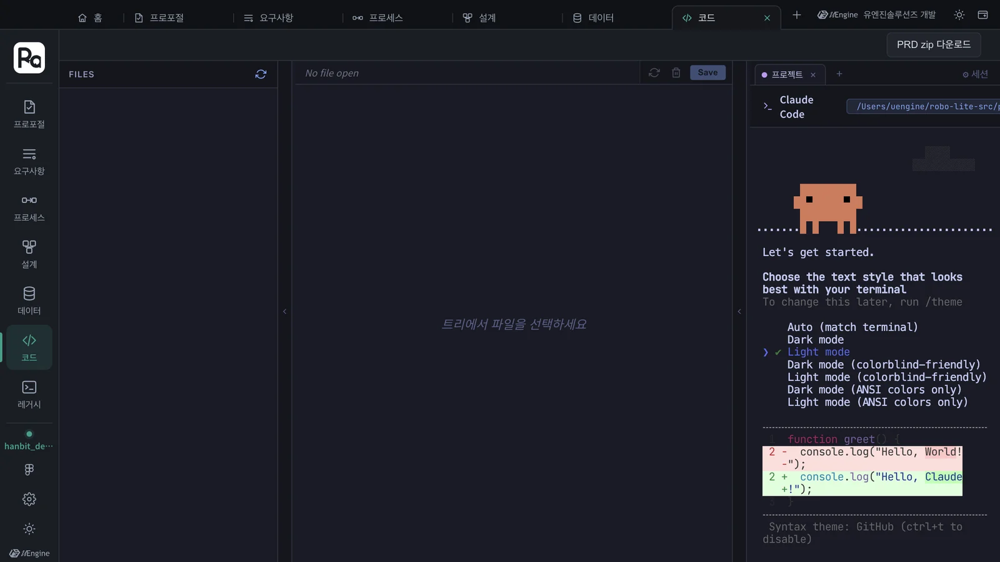
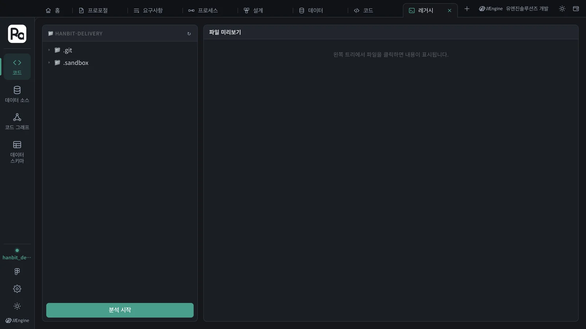

창 맨 위의 탭 줄, 프로젝트와 기능 카드가 있는 홈, 그리고 카드마다 탭으로 열리는 일곱 화면(프로포절·요구사항·프로세스·설계·데이터·코드·레거시)을 한 바퀴 돌며 어디서 무엇을 하는지 익힙니다.
창의 구성 — 탭 줄과 홈#
Robo Architect의 창은 브라우저처럼 생겼습니다. 맨 위 탭 줄의 첫 탭이 홈이고, 홈에서 기능을 고르면 그 화면이 새 탭으로 열립니다. 프로포절을 보면서 옆 탭에서 설계 캔버스를 함께 볼 수 있습니다.

| 탭 줄의 것 | 하는 일 |
|---|---|
| 홈 (⌘1) | 프로젝트를 열고 기능을 고르는 첫 화면 |
| 작업 탭 | 카드로 연 화면. ✕로 닫고(⌘W), 우클릭하면 「새로고침 · 새 창으로 분리 · 탭 닫기 · 다른 탭 닫기」 |
| ＋ | 홈으로 갑니다(⌘T) |
| 오른쪽 | 개발사 표시, 라이트/다크 테마, 새 창(⌘N) |
홈에는 네 가지가 있습니다.
- 열린 프로젝트 — 프로젝트(그래프) 이름과 코드 폴더. 「코드 폴더」는 그 폴더를 Finder에서 열고, 「프로젝트 바꾸기」는 다른 프로젝트를 고르거나 새로 만듭니다(1장).
- 기능 카드 여덟 개 — 아래 표의 화면을 탭으로 엽니다.
- 목록 — 이 프로젝트의 프로포절과 모든 프로젝트. 프로포절을 누르면 그 프로포절이 열린 탭이 생깁니다.
- 왼쪽 아래 상태 — 그래프 DB(Ontological) 연결과 에이전트(Claude Code).
기능 카드와 화면#
| 카드 | 탭 이름 | 무엇을 보나 | 이 튜토리얼 |
|---|---|---|---|
| 프로포절 | 프로포절 | 변경 하나 = 프로포절 하나. 인텐트 → 계획 → 구현 → 검증 → 수락의 흐름 | 3~7장 |
| 요구사항 | 요구사항 | 바운디드 컨텍스트 › 기능 › 유저 스토리 › 인수 조건(GWT)의 나무 | 8장 |
| 프로세스 | 프로세스 | 업무 흐름(BPM)과 이벤트 모델링 | 8장 |
| 설계 캔버스 | 설계 | 이벤트스토밍 캔버스 — 애그리거트·커맨드·이벤트·정책 | 8장 |
| 데이터 모델 | 데이터 | 애그리거트 안의 엔티티·값 객체·열거형·불변식 | 8장 |
| 코드 | 코드 | 코드 폴더의 파일과 Claude Code 터미널 | 6장 |
| 레거시 · 데이터 소스 | 레거시 | 기존 코드 분석, 원천 DB 연결(데이터 패브릭) | 11장 |
| 프로젝트 헌장 | 설계 | 설계 원칙·기술 스택·아키텍처 스타일을 적은 헌장 편집기 | 4장 |
따라 하기 — 카드로 화면 열기#
- 홈에서 프로포절 카드를 누릅니다. 「프로포절」 탭이 열립니다. 아직 프로포절이 없어 「Proposal이 없습니다」가 보입니다.
- 탭 줄의 홈을 누르고, 이번에는 설계 캔버스 카드를 누릅니다. 「설계」 탭이 하나 더 열립니다.
- 나머지 카드도 하나씩 열어 봅니다. 탭이 일곱 개가 됩니다.

열린 화면의 왼쪽 세로 줄은 레일입니다. 위에 Robo Architect 표시, 가운데 일곱 화면, 아래에 지금 프로젝트의 그래프 이름과 테마 단추가 있습니다. 레일로 한 탭 안에서 화면을 바꿀 수도 있습니다 — 탭은 여러 화면을 나란히 볼 때, 레일은 한 탭에서 오갈 때 씁니다. 레거시 탭만은 다릅니다 — 레일에 레거시 기능의 메뉴(코드 · 데이터 소스 · 코드 그래프 · 데이터 스키마)만 나오고, 다른 탭의 레일에서 레거시를 누르면 레거시 탭으로 갑니다.



코드 탭의 Claude Code가 처음 묻는 것
이 컴퓨터에서 Claude Code를 터미널로 처음 켜는 것이라면, 코드 탭의 터미널이 글자 색 테마부터 묻습니다. 위아래 화살표로 고르고 Enter를 누르면 됩니다. 한 번만 묻습니다.

따라 하기 — 탭 다루기#
- 탭 하나를 우클릭해 새 창으로 분리를 누릅니다. 그 탭이 새 창으로 옮겨 갑니다(다시 불러오지 않고 그대로).
- ⌘1을 누르면 홈, ⌘2부터는 순서대로 탭으로 갑니다. Ctrl+Tab은 다음 탭입니다.
- 탭 줄 오른쪽의 해 모양 단추로 라이트 테마로 바꿔 봅니다. 홈과 모든 탭이 함께 바뀝니다.
확인할 것#
- 홈의 카드로 연 화면이 탭으로 쌓인다.
- 열린 화면 왼쪽에 레일이 있고, 레일 아래에
hanbit_delivery가 보인다.
확인 문제#
- 프로포절 화면과 설계 캔버스를 나란히 놓고 보고 싶습니다. 어떻게 하나요?
- 홈의 목록에서 프로포절 한 줄을 누르면 무엇이 열리나요?
정답
- 둘 다 탭으로 연 뒤, 한 탭을 우클릭해 새 창으로 분리하고 창 두 개를 나란히 둡니다.
- 그 프로포절이 골라진 프로포절 탭이 새로 열립니다.